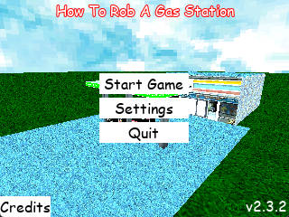
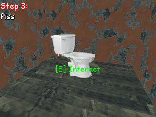
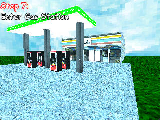
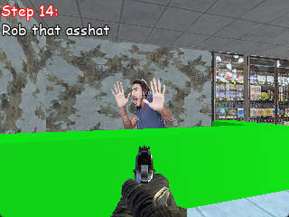

Windows | Linux | Android | PS Vita | Web
$Free
Get this, it's a step by step tutorial teaching you How To Rob A Gas Station!
...in case you didn't gather that from the title
It's a real quick game too, let's say 2 minutes long at most
But! Don't fret! There's 22 endings! If you care enough, that is
Screenshots




Alright less looking, more playing. Go play it on itch.io
Or go mess with the source code cause it's open source too!